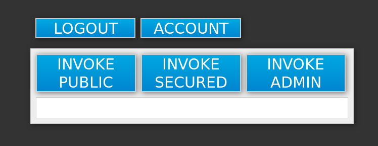

1. Introduction
1.1. What Is Red Hat Single Sign-On?
Red Hat Single Sign-On (RH-SSO) is an integrated sign-on solution available as a Red Hat JBoss Middleware for OpenShift containerized image. The Red Hat Single Sign-On for OpenShift image provides an authentication server for users to centrally log in, log out, register, and manage user accounts for web applications, mobile applications, and RESTful web services.
Red Hat offers multiple OpenShift application templates utilizing the RH-SSO for OpenShift image version number 7.2. These define the resources needed to develop Red Hat Single Sign-On 7.2 server based deployment and can be split into the following two categories:
-
Templates using HTTPS and JGroups keystores and a truststore for the RH-SSO server, all prepared beforehand. These secure the TLS communication using passthrough TLS termination:
-
sso72-https: RH-SSO 7.2 backed by internal H2 database on the same pod.
-
sso72-mysql: RH-SSO 7.2 backed by ephemeral MySQL database on a separate pod.
-
sso72-mysql-persistent: RH-SSO 7.2 backed by persistent MySQL database on a separate pod.
-
sso72-postgresql: RH-SSO 7.2 backed by ephemeral PostgreSQL database on a separate pod.
-
sso72-postgresql-persistent: RH-SSO 7.2 backed by persistent PostgreSQL database on a separate pod.
-
-
Templates using OpenShift’s internal service serving x509 certificate secrets to automatically create the HTTPS keystore used for serving secure content. The JGroups cluster traffic is authenticated using the
AUTHprotocol and encrypted using theASYM_ENCRYPTprotocol. The RH-SSO server truststore is also created automatically, containing the /var/run/secrets/kubernetes.io/serviceaccount/service-ca.crt CA certificate file, which is used to sign the certificate for HTTPS keystore. Moreover, the truststore for the RH-SSO server is pre-populated with the all known, trusted CA certificate files found in the Java system path. These templates secure the TLS communication using re-encryption TLS termination:-
sso72-x509-https: RH-SSO 7.2 with auto-generated HTTPS keystore and RH-SSO truststore, backed by internal H2 database. The
ASYM_ENCRYPTJGroups protocol is used for encryption of cluster traffic. -
sso72-x509-mysql-persistent: RH-SSO 7.2 with auto-generated HTTPS keystore and RH-SSO truststore, backed by persistent MySQL database. The
ASYM_ENCRYPTJGroups protocol is used for encryption of cluster traffic. -
sso72-x509-postgresql-persistent: RH-SSO 7.2 with auto-generated HTTPS keystore and RH-SSO truststore, backed by persistent PostgreSQL database. The
ASYM_ENCRYPTJGroups protocol is used for encryption of cluster traffic.
-
Other templates that integrate with RH-SSO are also available:
-
eap64-sso-s2i: RH-SSO-enabled Red Hat JBoss Enterprise Application Platform 6.4.
-
eap70-sso-s2i: RH-SSO-enabled Red Hat JBoss Enterprise Application Platform 7.0.
-
eap71-sso-s2i: RH-SSO enabled Red Hat JBoss Enterprise Application Platform 7.1.
-
datavirt63-secure-s2i: RH-SSO-enabled Red Hat JBoss Data Virtualization 6.3.
These templates contain environment variables specific to RH-SSO that enable automatic RH-SSO client registration when deployed.
See Automatic and Manual RH-SSO Client Registration Methods for more information.
2. Before You Begin
2.1. Comparison: RH-SSO for OpenShift Image and Red Hat Single Sign-On
The RH-SSO for OpenShift image version number 7.2 is based on Red Hat Single Sign-On 7.2. There are some differences in functionality between the RH-SSO for OpenShift image and Red Hat Single Sign-On:
-
The RH-SSO for OpenShift image includes all of the functionality of Red Hat Single Sign-On. In addition, the RH-SSO-enabled JBoss EAP image automatically handles OpenID Connect or SAML client registration and configuration for .war deployments that contain <auth-method>KEYCLOAK</auth-method> or <auth-method>KEYCLOAK-SAML</auth-method> in their respective web.xml files.
2.2. Version Compatibility and Support
See the xPaaS part of the OpenShift and Atomic Platform Tested Integrations page for details about OpenShift image version compatibility.
2.3. Deprecated Image Streams and Application Templates for RH-SSO for OpenShift
|
The RH-SSO for OpenShift image version number 7.0 and 7.1 are deprecated and they will no longer receive updates of image and application templates. To deploy new applications, it is recommended to use the version 7.2 of the RH-SSO for OpenShift image along with the application templates specific to that version. |
2.4. Initial Setup
The Tutorials in this guide follow on from and assume an OpenShift instance similar to that created in the OpenShift Primer.
|
For information related to updating the existing database when migrating RH-SSO for OpenShift image from RH-SSO 7.0 to RH-SSO 7.1, or from RH-SSO 7.1 to RH-SSO 7.2, see the Updating Existing Database when Migrating RH-SSO for OpenShift Image to a new version section. |
3. Get Started
3.1. Using the RH-SSO for OpenShift Image Streams and Application Templates
Red Hat JBoss Middleware for OpenShift images are pulled on demand from the Red Hat Registry: registry.access.redhat.com. To update to the latest RH-SSO for OpenShift images, run the following commands:
-
On your master host(s), ensure that you are logged in as a cluster administrator or a user with project administrator access to the global
openshiftproject.$ oc login -u system:admin
-
Run the following commands to update the core set of RH-SSO 7.2 resources for OpenShift in the
openshiftproject:$ for resource in sso72-image-stream.json \ sso72-https.json \ sso72-mysql-persistent.json \ sso72-mysql.json \ sso72-postgresql-persistent.json \ sso72-postgresql.json do oc replace -n openshift --force -f \ https://raw.githubusercontent.com/jboss-openshift/application-templates/ose-v1.4.9/sso/${resource} done -
Run the following command to install the RH-SSO 7.2 OpenShift image streams in the
openshiftproject:$ oc -n openshift import-image redhat-sso72-openshift:1.0
3.2. Preparing and Deploying the RH-SSO for OpenShift Application Templates
3.2.1. Configuring Keystores
The RH-SSO for OpenShift image requires two keystores:
- An SSL keystore to provide private and public keys for https traffic encryption.
- A JGroups keystore to provide private and public keys for network traffic encryption between nodes in the cluster.
These keystores are expected by the RH-SSO for OpenShift image, even if the application uses only http on a single-node OpenShift instance. Self-signed certificates do not provide secure communication and are intended for internal testing purposes.
| For production environments Red Hat recommends that you use your own SSL certificate purchased from a verified Certificate Authority (CA) for SSL-encrypted connections (HTTPS). |
See the JBoss Enterprise Application Platform Security Guide for more information on how to create a keystore with self-signed or purchased SSL certificates.
3.2.2. Generating Secrets
OpenShift uses objects called Secrets to hold sensitive information, such as passwords or keystores. See the Secrets chapter in the OpenShift documentation for more information.
The RH-SSO for OpenShift image requires one or more secrets that hold the two keystores described earlier. This provides the necessary authorization to applications in the project.
Use the SSL and JGroups keystore files to create secrets for the project:
$ oc secret new <sso-ssl-secret> <ssl.jks> $ oc secret new <sso-jgroups-secret> <jgroups.jceks>
3.2.3. Creating Administrator Account for Red Hat Single Sign-On Server
Red Hat Single Sign-On does not provide any pre-configured management account out of the box. This administrator account is necessary for logging into the master realm’s management console and perform server maintenance operations such as, creating realms or users, or registering applications intended to be secured by Red Hat Single Sign-On.
The administrator account can be created:
-
By providing values for the SSO_ADMIN_USERNAME and SSO_ADMIN_PASSWORD parameters, when deploying the RH-SSO application template, or
-
By a remote shell session to particular RH-SSO pod, if the RH-SSO for OpenShift image is deployed without an application template.
|
Red Hat Single Sign-On allows an initial administrator account creation via the Welcome Page web form. But only if the |
Creating RH-SSO Administrator Account via Template Parameters
When deploying RH-SSO application template, SSO_ADMIN_USERNAME and SSO_ADMIN_PASSWORD parameters denote the username and password of the RH-SSO server’s administrator account to be created for the master realm.
|
Both of these parameters are required. If not specified, they are auto generated and displayed as an OpenShift instructional message when the template is instantiated. |
|
The lifespan of the RH-SSO server’s administrator account depends upon the the storage type used to store the RH-SSO server’s database:
It is a common practice to deploy an RH-SSO application template to get the corresponding OpenShift deployment config for the application, and then reuse that deployment config multiple times (every time a new RH-SSO application needs to be instantiated). |
|
In the case of ephemeral or persistent database mode, after creating the RH_SSO server’s administrator account, remove the SSO_ADMIN_USERNAME and SSO_ADMIN_PASSWORD variables from the deployment config before deploying new RH-SSO applications. |
|
Run the following commands to prepare the previously created deployment config of the RH-SSO application for reuse after the administrator account has been created:
|
Creating RH-SSO Administrator Account via Remote Shell Session to RH-SSO Pod
Run following commands to create administrator account for the master realm of the RH-SSO server, when deploying the RH-SSO for OpenShift image directly from the image stream (without the template), after the RH-SSO application pod has been started:
-
Identify the RH-SSO application pod.
$ oc get pods NAME READY STATUS RESTARTS AGE sso-12-pt93n 1/1 Running 0 1m sso-mysql-6-d97pf 1/1 Running 0 2m
-
Open a remote shell session to RH-SSO for OpenShift container.
$ oc rsh sso-12-pt93n sh-4.2$
-
Create the RH-SSO server administrator account for the
masterrealm at the command line with theadd-user-keycloak.shscript.sh-4.2$ cd /opt/eap/bin/ sh-4.2$ ./add-user-keycloak.sh -r master -u sso_admin -p sso_password Added 'sso_admin' to '/opt/eap/standalone/configuration/keycloak-add-user.json', restart server to load user
The
sso_admin/sso_passwordcredentials in the example above are for demonstration purposes only. Refer to the password policy applicable within your organization for guidance on how to create a secure user name and password. -
Restart the underlying JBoss EAP server instance to load the newly added user account. Wait for the server to restart properly.
sh-4.2$ ./jboss-cli.sh --connect ':reload' { "outcome" => "success", "result" => undefined }When restarting the server it is important to restart just the JBoss EAP process within the running RH-SSO container, and not the whole container. Because restarting the whole container recreates it from scratch, without the RH-SSO server administration account for the
masterrealm to be created. -
Log into the
masterrealm’s administration console of the RH-SSO server using the the credentials created in the steps above. In the browser, navigate to http://sso-<project-name>.<hostname>/auth/admin for the RH-SSO web server, or to https://secure-sso-<project-name>.<hostname>/auth/admin for the encrypted RH-SSO web server, and specify user name and password used to create the administrator user.
3.2.4. Using the OpenShift Web Console
Log in to the OpenShift web console:
-
Click Add to project to list the default image streams and templates.
-
Use the Filter by keyword search bar to limit the list to those that match sso. You may need to click See all to show the desired application template.
-
Select an application template and configure the deployment parameters as required.
-
Click Create to deploy the application template.
These are some of the more common variables to configure an RH-SSO deployment:
| Variable | Description |
|---|---|
APPLICATION_NAME |
The name for the RH-SSO application. |
HOSTNAME_HTTPS |
Custom hostname for https service route. Leave blank for default hostname of <application-name>.<project>.<default-domain-suffix> |
HOSTNAME_HTTP |
Custom hostname for http service route. Leave blank for default hostname of <application-name>.<project>.<default-domain-suffix> |
HTTPS_KEYSTORE |
The name of the keystore file within the secret. |
HTTPS_PASSWORD |
The password for the keystore and certificate. |
HTTPS_SECRET |
The name of the secret containing the keystore file. |
JGROUPS_ENCRYPT_KEYSTORE |
The name of the JGroups keystore file within the secret. |
JGROUPS_ENCRYPT_PASSWORD |
The password for the JGroups keystore and certificate. |
JGROUPS_ENCRYPT_SECRET |
The name of the secret containing the JGroups keystore file. |
SSO_ADMIN_USERNAME |
Username of the administrator account for the |
SSO_ADMIN_PASSWORD |
Password of the administrator account for the |
SSO_REALM |
The name of an additional RH-SSO realm to create during deployment. |
SSO_SERVICE_USERNAME |
RH-SSO service user name to manage the realm. |
SSO_SERVICE_PASSWORD |
RH-SSO service user password. |
See the Reference chapter for a more comprehensive list of the RH-SSO environment variables. See the Example Workflow: Preparing and Deploying the RH-SSO for OpenShift Image for an end-to-end example of RH-SSO deployment.
3.2.5. Routes
The RH-SSO for OpenShift templates use TLS passthrough termination for routes by default. This means that the destination route receives encrypted traffic without the OpenShift router providing TLS termination. Users do not need the relevant SSL certificate to connect to the RH-SSO login page.
For more information on OpenShift route types, see the Networking chapter of the OpenShift Architecture Guide.
3.2.6. Deployment Process
Once deployed, the sso71-https and sso72-https templates create a single pod that contains both the database and the RH-SSO servers. The sso71-mysql, sso72-mysql, sso71-mysql-persistent, sso72-mysql-persistent, sso71-postgresql, sso72-postgresql, sso71-postgresql-persistent, and sso72-postgresql-persistent templates create two pods, one for the database server and one for the RH-SSO web server.
After the RH-SSO web server pod has started, it can be accessed at its custom configured hostnames, or at the default hostnames:
-
http://sso-<project-name>.<hostname>/auth/admin: for the RH-SSO web server, and
-
https://secure-sso-<project-name>.<hostname>/auth/admin: for the encrypted RH-SSO web server.
Use the administrator user credentials to log in into the master realms administration console.
3.2.7. RH-SSO Clients
Clients are RH-SSO entities that request user authentication. A client can be an application requesting RH-SSO to provide user authentication, or it can be making requests for access tokens to start services on behalf of an authenticated user. See the Managing Clients chapter of the Red Hat Single Sign-On documentation for more information.
RH-SSO provides OpenID-Connect and SAML client protocols.
OpenID-Connect is the preferred protocol and utilizes three different access types:
-
public: Useful for JavaScript applications that run directly in the browser and require no server configuration.
-
confidential: Useful for server-side clients, such as EAP web applications, that need to perform a browser login.
-
bearer-only: Useful for back-end services that allow bearer token requests.
It is required to specify the client type in the <auth-method> key of the application web.xml file. This file is read by the image at deployment. Set the value of <auth-method> element to:
-
KEYCLOAK for the OpenID Connect client.
-
KEYCLOAK-SAML for the SAML client.
The following is an example snippet for the application web.xml to configure an OIDC client:
...
<login-config>
<auth-method>KEYCLOAK</auth-method>
</login-config>
...
3.2.8. Automatic and Manual RH-SSO Client Registration Methods
A client application can be automatically registered to an RH-SSO realm by using credentials passed in variables specific to the eap64-sso-s2i, eap70-sso-s2i, eap71-sso-s2i, and datavirt63-secure-s2i templates.
Alternatively, you can manually register the client application by configuring and exporting the RH-SSO client adapter and including it in the client application configuration.
3.2.9. Automatic RH-SSO Client Registration
Automatic RH-SSO client registration is determined by RH-SSO environment variables specific to the eap64-sso-s2i, eap70-sso-s2i, eap71-sso-s2i, and datavirt63-secure-s2i templates. The RH-SSO credentials supplied in the template are then used to register the client to the RH-SSO realm during deployment of the client application.
The RH-SSO environment variables included in the eap64-sso-s2i, eap70-sso-s2i, eap71-sso-s2i, and datavirt63-secure-s2i templates are:
| Variable | Description |
|---|---|
HOSTNAME_HTTP |
Custom hostname for http service route. Leave blank for default hostname of <application-name>.<project>.<default-domain-suffix> |
HOSTNAME_HTTPS |
Custom hostname for https service route. Leave blank for default hostname of <application-name>.<project>.<default-domain-suffix> |
SSO_URL |
The RH-SSO web server authentication address: https://secure-sso-<project-name>.<hostname>/auth |
SSO_REALM |
The RH-SSO realm created for this procedure. |
SSO_USERNAME |
The name of the realm management user. |
SSO_PASSWORD |
The password of the user. |
SSO_PUBLIC_KEY |
The public key generated by the realm. It is located in the Keys tab of the Realm Settings in the RH-SSO console. |
SSO_BEARER_ONLY |
If set to true, the OpenID Connect client is registered as bearer-only. |
SSO_ENABLE_CORS |
If set to true, the RH-SSO adapter enables Cross-Origin Resource Sharing (CORS). |
If the RH-SSO client uses the SAML protocol, the following additional variables need to be configured:
| Variable | Description |
|---|---|
SSO_SAML_KEYSTORE_SECRET |
Secret to use for access to SAML keystore. The default is sso-app-secret. |
SSO_SAML_KEYSTORE |
Keystore filename in the SAML keystore secret. The default is keystore.jks. |
SSO_SAML_KEYSTORE_PASSWORD |
Keystore password for SAML. The default is mykeystorepass. |
SSO_SAML_CERTIFICATE_NAME |
Alias for keys/certificate to use for SAML. The default is jboss. |
See Example Workflow: Automatically Registering EAP Application in RH-SSO with OpenID-Connect Client for an end-to-end example of the automatic client registration method using an OpenID-Connect client.
3.2.10. Manual RH-SSO Client Registration
Manual RH-SSO client registration is determined by the presence of a deployment file in the client application’s ../configuration/ directory. These files are exported from the client adapter in the RH-SSO web console. The name of this file is different for OpenID-Connect and SAML clients:
| OpenID-Connect |
../configuration/secure-deployments |
| SAML |
../configuration/secure-saml-deployments |
These files are copied to the RH-SSO adapter configuration section in the standalone-openshift.xml at when the application is deployed.
There are two methods for passing the RH-SSO adapter configuration to the client application:
-
Modify the deployment file to contain the RH-SSO adapter configuration so that it is included in the standalone-openshift.xml file at deployment, or
-
Manually include the OpenID-Connect keycloak.json file, or the SAML keycloak-saml.xml file in the client application’s ../WEB-INF directory.
See Example Workflow: Manually Configure an Application to Use RH-SSO Authentication, Using SAML Client for an end-to-end example of the manual RH-SSO client registration method using a SAML client.
3.2.11. Limitations
OpenShift does not currently accept OpenShift role mapping from external providers. If RH-SSO is used as an authentication gateway for OpenShift, users created in RH-SSO must have the roles added using the OpenShift Administrator oadm policy command.
For example, to allow an RH-SSO-created user to view a project namespace in OpenShift:
oadm policy add-role-to-user view <user-name> -n <project-name>
3.3. Binary Builds
To deploy existing applications on OpenShift, you can use the binary source capability.
3.3.1. Deploy Binary Build of EAP 6.4 / 7.0 JSP Service Invocation Application that Authenticates Using Red Hat Single Sign-On
The following example uses both app-jee-jsp and service-jee-jaxrs quickstarts to deploy EAP 6.4 / 7.0 JSP service application that authenticates using the Red Hat Single Sign-On.
Prerequisite:
|
This guide assumes the RH-SSO for OpenShift image has been previously deployed using one of the following templates:
|
Create RH-SSO Realm, Roles, and User for the EAP 6.4 / 7.0 JSP Application
The EAP 6.4 / 7.0 JSP service application requires dedicated RH-SSO realm, username, and password to be able to authenticate using Red Hat Single Sign-On. Perform the following steps after the RH-SSO for OpenShift image has been deployed:
Create the RH-SSO Realm
-
Login to the administration console of the RH-SSO server.
https://secure-sso-sso-app-demo.openshift.example.com/auth/admin
-
Hover your cursor over the realm namespace (default is Master) at the top of the sidebar and click Add Realm.
-
Enter a realm name (this example uses
demo) and click Create.
Copy the Public Key
In the newly created demo realm, click the Keys tab and copy the public key that has been generated.
|
RH-SSO 7.1 and RH-SSO 7.2 images generate two keys by default:
To copy the public key information for the RH-SSO 7.1 or RH-SSO 7.2 image, click the Public key button of the RSA row of the keys table. Then select and copy the content of the pop-up window that appears. |
The information about the public key is necessary later to deploy the RH-SSO-enabled EAP 6.4 / 7.0 JSP application.
Create RH-SSO Roles
|
The service-jee-jaxrs quickstart exposes three endpoints by the service:
|
Create user and admin roles in RH-SSO. These roles will be assigned to an RH-SSO application user to authenticate access to user applications.
-
Click Roles in the Configure sidebar to list the roles for this realm.
This is a new realm, so there should only be the default roles:
-
offline_accessanduma_authorizationrole for the RH-SSO 7.1 and RH-SSO 7.2 images.
-
-
Click Add Role.
-
Enter the role name (
user) and click Save.
Repeat these steps for the admin role.
Create the RH-SSO Realm Management User
-
Click Users in the Manage sidebar to view the user information for the realm.
-
Click Add User.
-
Enter a valid Username (this example uses the user
appuser) and click Save. -
Edit the user configuration:
-
Click the Credentials tab in the user space and enter a password for the user (this example uses the password
apppassword). -
Ensure the Temporary Password option is set to Off so that it does not prompt for a password change later on, and click Reset Password to set the user password. A pop-up window prompts for additional confirmation.
-
Assign user RH-SSO Role to the Realm Management User
Perform the following steps to tie the previously created appuser with the user RH-SSO role:
-
Click Role Mappings to list the realm and client role configuration. In Available Roles, select the
userrole created earlier, and click Add selected>. -
Click Client Roles, select realm-management entry from the list, select each record in the Available Roles list.
You can select multiple items at once by holding the Ctrl key and simultaneously clicking the first
impersonationentry. While keeping the Ctrl key and the left mouse button pressed, move to the end of the list to theview-clientsentry and ensure each record is selected. -
Click Add selected> to assign the roles to the client.
Prepare RH-SSO Authentication for OpenShift Deployment of the EAP 6.4 / 7.0 JSP Application
-
Create a new project for the EAP 6.4 / 7.0 JSP application.
$ oc new-project eap-app-demo
-
Add the
viewrole to thedefaultservice account. This enables the service account to view all the resources in theeap-app-demonamespace, which is necessary for managing the cluster.$ oc policy add-role-to-user view system:serviceaccount:$(oc project -q):default
-
The EAP template requires an SSL keystore and a JGroups keystore. This example uses
keytool, a package included with the Java Development Kit, to generate self-signed certificates for these keystores.-
Generate a secure key for the SSL keystore (this example uses
passwordas password for the keystore).$ keytool -genkeypair \ -dname "CN=secure-eap-app-eap-app-demo.openshift.example.com" \ -alias https \ -storetype JKS \ -keystore eapkeystore.jks
-
Generate a secure key for the JGroups keystore (this example uses
passwordas password for the keystore).$ keytool -genseckey \ -alias jgroups \ -storetype JCEKS \ -keystore eapjgroups.jceks
-
Generate the EAP 6.4 / 7.0 for OpenShift secrets with the SSL and JGroup keystore files.
$ oc secret new eap-ssl-secret eapkeystore.jks
$ oc secret new eap-jgroup-secret eapjgroups.jceks
-
Add the EAP application secret to the
defaultservice account.$ oc secrets link default eap-ssl-secret eap-jgroup-secret
-
Deploy Binary Build of the EAP 6.4 / 7.0 JSP Application
-
Clone the source code.
-
Build both the service-jee-jaxrs and app-jee-jsp applications.
-
Build the
service-jee-jaxrsapplication.$ cd keycloak-quickstarts/service-jee-jaxrs/
$ mvn clean package -DskipTests [INFO] Scanning for projects... [INFO] [INFO] ------------------------------------------------------------------------ [INFO] Building Keycloak Quickstart: service-jee-jaxrs 3.1.0.Final [INFO] ------------------------------------------------------------------------ ... [INFO] ------------------------------------------------------------------------ [INFO] BUILD SUCCESS [INFO] ------------------------------------------------------------------------ [INFO] Total time: 2.153 s [INFO] Finished at: 2017-06-26T12:06:12+02:00 [INFO] Final Memory: 25M/241M [INFO] ------------------------------------------------------------------------
-
Comment out the
app-jee-jsp/config/keycloak.jsonrequirement of themaven-enforcer-pluginplugin and build theapp-jee-jspapplication.service-jee-jaxrs]$ cd ../app-jee-jsp/
app-jee-jsp]$ sed -i /\<executions\>/s/^/\<\!--/ pom.xml
app-jee-jsp]$ sed -i '/\(<\/executions>\)/a\-->' pom.xml
app-jee-jsp]$ mvn clean package -DskipTests [INFO] Scanning for projects... [INFO] [INFO] ------------------------------------------------------------------------ [INFO] Building Keycloak Quickstart: app-jee-jsp 3.1.0.Final [INFO] ------------------------------------------------------------------------ ... [INFO] Building war: /tmp/github/keycloak-quickstarts/app-jee-jsp/target/app-jsp.war [INFO] ------------------------------------------------------------------------ [INFO] BUILD SUCCESS [INFO] ------------------------------------------------------------------------ [INFO] Total time: 3.018 s [INFO] Finished at: 2017-06-26T12:22:25+02:00 [INFO] Final Memory: 35M/310M [INFO] ------------------------------------------------------------------------
The app-jee-jsp quickstart requires to configure the adapter, and adapter configuration file (
keycloak.json) to be present at theconfig/directory in the root of the quickstart to successfully build the quickstart. But since this example configures the adapter later via selected environment variables available for the EAP 6.4 / 7.0 for OpenShift image, it is not necessary to specify the form ofkeycloak.jsonadapter configuration file at this moment.
-
-
Prepare the directory structure on the local file system.
Application archives in the deployments/ subdirectory of the main binary build directory are copied directly to the standard deployments directory of the image being built on OpenShift. For the application to deploy, the directory hierarchy containing the web application data must be correctly structured.
Create main directory for the binary build on the local file system and deployments/ subdirectory within it. Copy the previously built WAR archives of both the service-jee-jaxrs and app-jee-jsp quickstarts to the deployments/ subdirectory:
app-jee-jsp]$ ls config pom.xml README.md src target
app-jee-jsp]$ mkdir -p sso-eap7-bin-demo/deployments
app-jee-jsp]$ cp target/app-jsp.war sso-eap7-bin-demo/deployments/
app-jee-jsp]$ cp ../service-jee-jaxrs/target/service.war sso-eap7-bin-demo/deployments/
app-jee-jsp]$ tree sso-eap7-bin-demo/ sso-eap7-bin-demo/ |__ deployments |__ app-jsp.war |__ service.war 1 directory, 2 filesLocation of the standard deployments directory depends on the underlying base image, that was used to deploy the application. See the following table:
Table 1. Standard Location of the Deployments Directory Name of the Underlying Base Image(s) Standard Location of the Deployments Directory EAP for OpenShift 6.4 and 7.0
$JBOSS_HOME/standalone/deployments
Java S2I for OpenShift
/deployments
JWS for OpenShift
$JWS_HOME/webapps
-
Identify the image stream for EAP 6.4 / 7.0 image.
$ oc get is -n openshift | grep eap | cut -d ' ' -f 1 jboss-eap64-openshift jboss-eap70-openshift jboss-eap71-openshift
-
Create new binary build, specifying image stream and application name.
Replace
--image-stream=jboss-eap70-openshiftparameter with the--image-stream=jboss-eap64-openshiftone in the following oc command to deploy the JSP application on top of JBoss EAP 6.4 for OpenShift image.$ oc new-build --binary=true \ --image-stream=jboss-eap70-openshift \ --name=eap-app --> Found image 31895a4 (3 months old) in image stream "openshift/jboss-eap70-openshift" under tag "latest" for "jboss-eap70-openshift" JBoss EAP 7.0 ------------- Platform for building and running JavaEE applications on JBoss EAP 7.0 Tags: builder, javaee, eap, eap7 * A source build using binary input will be created * The resulting image will be pushed to image stream "eap-app:latest" * A binary build was created, use 'start-build --from-dir' to trigger a new build --> Creating resources with label build=eap-app ... imagestream "eap-app" created buildconfig "eap-app" created --> Success -
Start the binary build. Instruct
ocexecutable to use main directory of the binary build we created in previous step as the directory containing binary input for the OpenShift build. In the working directory of app-jee-jsp issue the following command.app-jee-jsp]$ oc start-build eap-app \ --from-dir=./sso-eap7-bin-demo/ \ --follow Uploading directory "sso-eap7-bin-demo" as binary input for the build ... build "eap-app-1" started Receiving source from STDIN as archive ... Copying all war artifacts from /home/jboss/source/. directory into /opt/eap/standalone/deployments for later deployment... Copying all ear artifacts from /home/jboss/source/. directory into /opt/eap/standalone/deployments for later deployment... Copying all rar artifacts from /home/jboss/source/. directory into /opt/eap/standalone/deployments for later deployment... Copying all jar artifacts from /home/jboss/source/. directory into /opt/eap/standalone/deployments for later deployment... Copying all war artifacts from /home/jboss/source/deployments directory into /opt/eap/standalone/deployments for later deployment... '/home/jboss/source/deployments/app-jsp.war' -> '/opt/eap/standalone/deployments/app-jsp.war' '/home/jboss/source/deployments/service.war' -> '/opt/eap/standalone/deployments/service.war' Copying all ear artifacts from /home/jboss/source/deployments directory into /opt/eap/standalone/deployments for later deployment... Copying all rar artifacts from /home/jboss/source/deployments directory into /opt/eap/standalone/deployments for later deployment... Copying all jar artifacts from /home/jboss/source/deployments directory into /opt/eap/standalone/deployments for later deployment... Pushing image 172.30.82.129:5000/eap-app-demo/eap-app:latest ... Pushed 6/7 layers, 86% complete Pushed 7/7 layers, 100% complete Push successful
-
Create a new OpenShift application based on the build.
$ oc new-app eap-app --> Found image 6b13d36 (2 minutes old) in image stream "eap-app-demo/eap-app" under tag "latest" for "eap-app" eap-app-demo/eap-app-1:aa2574d9 ------------------------------- Platform for building and running JavaEE applications on JBoss EAP 7.0 Tags: builder, javaee, eap, eap7 * This image will be deployed in deployment config "eap-app" * Ports 8080/tcp, 8443/tcp, 8778/tcp will be load balanced by service "eap-app" * Other containers can access this service through the hostname "eap-app" --> Creating resources ... deploymentconfig "eap-app" created service "eap-app" created --> Success Run 'oc status' to view your app. -
Stop all running containers of the EAP 6.4 / 7.0 JSP application in the current namespace.
$ oc get dc -o name deploymentconfig/eap-app
$ oc scale dc/eap-app --replicas=0 deploymentconfig "eap-app" scaled
-
Further configure the EAP 6.4 / 7.0 JSP application prior the deployment.
-
Configure the application with proper details about the RH-SSO server instance.
Ensure to replace the value of SSO_PUBLIC_KEY variable below with the actual content of the RSA public key for the
demorealm, that has been copied.$ oc set env dc/eap-app \ -e HOSTNAME_HTTP="eap-app-eap-app-demo.openshift.example.com" \ -e HOSTNAME_HTTPS="secure-eap-app-eap-app-demo.openshift.example.com" \ -e SSO_DISABLE_SSL_CERTIFICATE_VALIDATION="true" \ -e SSO_USERNAME="appuser" \ -e SSO_PASSWORD="apppassword" \ -e SSO_REALM="demo" \ -e SSO_URL="https://secure-sso-sso-app-demo.openshift.example.com/auth" \ -e SSO_PUBLIC_KEY="MIIBIjANBgkqhkiG9w0BAQEFAAOCAQ8AMIIBCgKCAQEAkdhXyKx97oIoO6HwnV/MiX2EHO55Sn+ydsPzbjJevI5F31UvUco9uA8dGl6oM8HrnaWWv+i8PvmlaRMhhl6Xs68vJTEc6d0soP+6A+aExw0coNRp2PDwvzsXVWPvPQg3+iytStxu3Icndx+gC0ZYnxoRqL7rY7zKcQBScGEr78Nw6vZDwfe6d/PQ6W4xVErNytX9KyLFVAE1VvhXALyqEM/EqYGLmpjw5bMGVKRXnhmVo9E88CkFDH8E+aPiApb/gFul1GJOv+G8ySLoR1c8Y3L29F7C81odkVBp2yMm3RVFIGSPTjHqjO/nOtqYIfY4Wyw9mRIoY5SyW7044dZXRwIDAQAB" \ -e SSO_SECRET="0bb8c399-2501-4fcd-a183-68ac5132868d" deploymentconfig "eap-app" updated
-
Configure the application with details about both the SSL and JGroups keystore.
$ oc set env dc/eap-app \ -e HTTPS_KEYSTORE_DIR="/etc/eap-secret-volume" \ -e HTTPS_KEYSTORE="eapkeystore.jks" \ -e HTTPS_PASSWORD="password" \ -e JGROUPS_ENCRYPT_SECRET="eap-jgroup-secret" \ -e JGROUPS_ENCRYPT_KEYSTORE_DIR="/etc/jgroups-encrypt-secret-volume" \ -e JGROUPS_ENCRYPT_KEYSTORE="eapjgroups.jceks" \ -e JGROUPS_ENCRYPT_PASSWORD="password" deploymentconfig "eap-app" updated
-
Define OpenShift volumes for both the SSL and JGroups secrets created earlier.
$ oc volume dc/eap-app --add \ --name="eap-keystore-volume" \ --type=secret \ --secret-name="eap-ssl-secret" \ --mount-path="/etc/eap-secret-volume" deploymentconfig "eap-app" updated
$ oc volume dc/eap-app --add \ --name="eap-jgroups-keystore-volume" \ --type=secret \ --secret-name="eap-jgroup-secret" \ --mount-path="/etc/jgroups-encrypt-secret-volume" deploymentconfig "eap-app" updated
-
Configure the deployment config of the application to run application pods under the
defaultOpenShift service account (default setting).$ oc patch dc/eap-app --type=json \ -p '[{"op": "add", "path": "/spec/template/spec/serviceAccountName", "value": "default"}]' "eap-app" patched
-
-
Deploy container of the EAP 6.4 / 7.0 JSP application using the modified deployment config.
$ oc scale dc/eap-app --replicas=1 deploymentconfig "eap-app" scaled
-
Expose the service as route.
$ oc get svc -o name service/eap-app
$ oc get route No resources found.
$ oc expose svc/eap-app route "eap-app" exposed
$ oc get route NAME HOST/PORT PATH SERVICES PORT TERMINATION WILDCARD eap-app eap-app-eap-app-demo.openshift.example.com eap-app 8080-tcp None
Access the Application
Access the application in your browser using the URL http://eap-app-eap-app-demo.openshift.example.com/app-jsp. You should see output like on the following image:

Perform the following to test the application:
-
Click the INVOKE PUBLIC button to access the
publicendpoint that doesn’t require authentication.You should see the Message: public output.
-
Click the LOGIN button to be redirected for user authentication to the RH-SSO server instance against the
demorealm.Specify username and password of the RH-SSO user configured earlier (
appuser/apppassword). Click Log in. The look of the application changes as detailed in the following image:
-
Click the INVOKE SECURED button to access the
securedendpoint.You should see the Message: secured output.
-
Click the INVOKE ADMIN button to access the
adminendpoint.You should see 403 Forbidden output.
The
adminendpoint requires users withadminRH-SSO role to invoke properly. Access for theappuseris forbidden because they only haveuserrole privilege, which allows them to access thesecuredendpoint.Perform the following steps to add the
appuserto theadminRH-SSO role:-
Access the administration console of the RH-SSO server’s instance.
https://secure-sso-sso-app-demo.openshift.example.com/auth/admin.
-
Click Users in the Manage sidebar to view the user information for the
demorealm. -
Click View all users button.
-
Click the ID link for the appuser or alternatively click the Edit button in the Actions column.
-
Click the Role Mappings tab.
-
Select
adminentry from the Available Roles list in the Realm Roles row. -
Click Add selected> button to add the
adminrole to the user. -
Return to EAP 6.4 / 7.0 JSP service application.
http://eap-app-eap-app-demo.openshift.example.com/app-jsp.
-
Click the LOGOUT button to reload role mappings for the
appuser. -
Click the LOGIN button again and provider
appusercredentials. -
Click the INVOKE ADMIN button again.
You should see the Message: admin output already.
-
4. Tutorials
4.1. Example Workflow: Preparing and Deploying the RH-SSO for OpenShift image
4.1.1. Preparing RH-SSO Authentication for OpenShift Deployment
Log in to the OpenShift CLI with a user that holds the cluster:admin role.
To deploy existing applications on OpenShift, you can use the binary source capability.
4.1.2. Deploy Binary Build of EAP 6.4 / 7.0 JSP Service Invocation Application and Secure it Using Red Hat Single Sign-On
The following example uses both app-jee-jsp and service-jee-jaxrs quickstarts to deploy EAP 6.4 / 7.0 JSP service application that authenticates using the Red Hat Single Sign-On.
Prerequisite:
|
This guide assumes the RH-SSO for OpenShift image has been previously deployed using one of the following templates:
|
Create RH-SSO Realm, Roles, and User for the EAP 6.4 / 7.0 JSP Application
The EAP 6.4 / 7.0 JSP service application requires dedicated RH-SSO realm, username, and password to be able to authenticate using Red Hat Single Sign-On. Perform the following steps after the RH-SSO for OpenShift image has been deployed:
Create the RH-SSO Realm
-
Login to the administration console of the RH-SSO server.
https://secure-sso-sso-app-demo.openshift.example.com/auth/admin
-
Hover your cursor over the realm namespace (default is Master) at the top of the sidebar and click Add Realm.
-
Enter a realm name (this example uses
demo) and click Create.
4.2. Example Workflow: Updating Existing Database when Migrating RH-SSO for OpenShift Image to a new version
|
Red Hat Single Sign-On 7.2 can automatically migrate the database schema, or you can choose to do it manually.
|
By default the database is automatically migrated when you start RH-SSO 7.2 for the first time. |
4.2.1. Automatic Database Migration
This process assumes that you are running RH-SSO 7.1 image deployed using one of the following templates:
-
sso71-mysql
-
sso71-postgresql
-
sso71-mysql-persistent
-
sso71-postgresql-persistent
|
Stop all RH-SSO 7.1 pods before upgrading to RH-SSO 7.2, as they cannot run concurrently against the same database. |
Use the following steps to automatically migrate the database schema:
-
Identify existing deployment config for RH-SSO 7.1 containers.
$ oc get dc -o name --selector=application=sso deploymentconfig/sso deploymentconfig/sso-postgresql
-
Stop all RH-SSO 7.1 containers in the current namespace.
$ oc scale --replicas=0 dc/sso deploymentconfig "sso" scaled
-
Update the image change trigger in the existing deployment config to reference the RH-SSO 7.2 image.
$ oc patch dc/sso --type=json -p '[{"op": "replace", "path": "/spec/triggers/0/imageChangeParams/from/name", "value": "redhat-sso72-openshift:1.1"}]' "sso" patched -
Start rollout of the new RH-SSO 7.2 images based on the latest image defined in the image change triggers.
$ oc rollout latest dc/sso deploymentconfig "sso" rolled out
-
Deploy RH-SSO 7.2 containers using the modified deployment config.
$ oc scale --replicas=1 dc/sso deploymentconfig "sso" scaled
-
(Optional) Verify the database has been successfully updated.
$ oc get pods --selector=application=sso NAME READY STATUS RESTARTS AGE sso-4-vg21r 1/1 Running 0 1h sso-postgresql-1-t871r 1/1 Running 0 2h
$ oc logs sso-4-vg21r | grep 'Updating' 11:23:45,160 INFO [org.keycloak.connections.jpa.updater.liquibase.LiquibaseJpaUpdaterProvider] (ServerService Thread Pool -- 58) Updating database. Using changelog META-INF/jpa-changelog-master.xml
4.2.2. Manual Database Migration
|
Pre-generated scripts are not available. They are generated dynamically depending on the database. With RH-SSO 7.2 one can generate and export these to an SQL file that can be manually applied to the database afterwards. To dynamically generate the SQL migration file for the database:
See database configuration of RH-SSO 7.2 for further details. The database migration process handles the data schema update and performs manipulation of the data, therefore, stop all RH-SSO 7.1 instances before dynamic generation of the SQL migration file. |
This guide assumes the RH-SSO 7.1 for OpenShift image has been previously deployed using one of the following templates:
-
sso71-mysql
-
sso71-postgresql
-
sso71-mysql-persistent
-
sso71-postgresql-persistent
Perform the following to generate and get the SQL migration file for the database:
-
Prepare template of OpenShift database migration job to generate the SQL file.
$ cat sso71-to-sso72-db-migrate-job.yaml.orig apiVersion: batch/v1 kind: Job metadata: name: sso71-to-sso72-db-migrate-job spec: autoSelector: true parallelism: 0 completions: 1 template: metadata: name: sso71-to-sso72-db-migrate-job spec: containers: - env: - name: DB_SERVICE_PREFIX_MAPPING value: <<DB_SERVICE_PREFIX_MAPPING_VALUE>> - name: <<PREFIX>>_JNDI value: <<PREFIX_JNDI_VALUE>> - name: <<PREFIX>>_USERNAME value: <<PREFIX_USERNAME_VALUE>> - name: <<PREFIX>>_PASSWORD value: <<PREFIX_PASSWORD_VALUE>> - name: <<PREFIX>>_DATABASE value: <<PREFIX_DATABASE_VALUE>> - name: TX_DATABASE_PREFIX_MAPPING value: <<TX_DATABASE_PREFIX_MAPPING_VALUE>> - name: <<SERVICE_HOST>> value: <<SERVICE_HOST_VALUE>> - name: <<SERVICE_PORT>> value: <<SERVICE_PORT_VALUE>> image: <<SSO_IMAGE_VALUE>> imagePullPolicy: Always name: sso71-to-sso72-db-migrate-job # Keep the pod running after SQL migration file has been generated, # so we can retrieve it command: ["/bin/bash", "-c", "/opt/eap/bin/openshift-launch.sh || sleep 600"] restartPolicy: Never$ cp sso71-to-sso72-db-migrate-job.yaml.orig sso71-to-sso72-db-migrate-job.yaml
-
Copy the datasource definition and database access credentials from RH-SSO 7.1 deployment config to appropriate places in database job migration template.
Use the following script to copy
DB_SERVICE_PREFIX_MAPPINGandTX_DATABASE_PREFIX_MAPPINGvariable values, together with values of environment variables specific to particular datasource (<PREFIX>_JNDI,<PREFIX>_USERNAME,<PREFIX>_PASSWORD, and<PREFIX>_DATABASE) from the deployment config namedssoto the database job migration template namedsso71-to-sso72-db-migrate-job.yaml.Although the
DB_SERVICE_PREFIX_MAPPINGenvironment variable allows a comma-separated list of <name>-<database_type>=<PREFIX> triplets as its value, this example script accepts only one datasource triplet definition for demonstration purposes. You can modify the script for handling multiple datasource definition triplets.$ cat mirror_sso_dc_db_vars.sh #!/bin/bash # IMPORTANT: # # If the name of the SSO deployment config differs from 'sso' or if the file name of the # YAML definition of the migration job is different, update the following two variables SSO_DC_NAME="sso" JOB_MIGRATION_YAML="sso71-to-sso72-db-migrate-job.yaml" # Get existing variables of the $SSO_DC_NAME deployment config in an array declare -a SSO_DC_VARS=($(oc set env dc/${SSO_DC_NAME} --list | sed '/^#/d')) # Get the PREFIX used in the names of environment variables PREFIX=$(grep -oP 'DB_SERVICE_PREFIX_MAPPING=[^ ]+' <<< "${SSO_DC_VARS[@]}") PREFIX=${PREFIX##*=} # Substitute (the order in which replacements are made is important): # * <<PREFIX>> with actual $PREFIX value and # * <<PREFIX with "<<$PREFIX" value sed -i "s#<<PREFIX>>#${PREFIX}#g" ${JOB_MIGRATION_YAML} sed -i "s#<<PREFIX#<<${PREFIX}#g" ${JOB_MIGRATION_YAML} # Construct the array of environment variables specific to the datasource declare -a DB_VARS=(JNDI USERNAME PASSWORD DATABASE) # Prepend $PREFIX to each item of the datasource array DB_VARS=( "${DB_VARS[@]/#/${PREFIX}_}" ) # Add DB_SERVICE_PREFIX_MAPPING and TX_DATABASE_PREFIX_MAPPING variables # to datasource array DB_VARS=( "${DB_VARS[@]}" DB_SERVICE_PREFIX_MAPPING TX_DATABASE_PREFIX_MAPPING ) # Construct the SERVICE from DB_SERVICE_PREFIX_MAPPING SERVICE=$(grep -oP 'DB_SERVICE_PREFIX_MAPPING=[^ ]+' <<< "${SSO_DC_VARS[@]}") SERVICE=${SERVICE#*=} SERVICE=${SERVICE%=*} SERVICE=${SERVICE^^} SERVICE=${SERVICE//-/_} # If the deployment config contains <<SERVICE>>_SERVICE_HOST and # <<SERVICE>>_SERVICE_PORT variables, add them to the datasource array. # Their values also need to be propagated into yaml definition of the migration job. if grep -Pq "${SERVICE}_SERVICE_HOST=[^ ]+" <<< "${SSO_DC_VARS[@]}" && grep -Pq "${SERVICE}_SERVICE_PORT=[^ ]+" <<< "${SSO_DC_VARS[@]}" then DB_VARS=( "${DB_VARS[@]}" ${SERVICE}_SERVICE_HOST ${SERVICE}_SERVICE_PORT ) # If they are not defined, delete their placeholder rows in yaml definition file # (since if not defined they are not expanded which make the yaml definition invalid). else for KEY in "HOST" "PORT" do sed -i "/SERVICE_${KEY}/d" ${JOB_MIGRATION_YAML} done fi # Substitute (the order in which replacements are made is important): # * <<SERVICE_HOST>> with ${SERVICE}_SERVICE_HOST and # * <<SERVICE_HOST_VALUE>> with "<<${SERVICE}_SERVICE_HOST_VALUE>>" # Do this for both "HOST" and "PORT" for KEY in "HOST" "PORT" do sed -i "s#<<SERVICE_${KEY}>>#${SERVICE}_SERVICE_${KEY}#g" ${JOB_MIGRATION_YAML} sed -i "s#<<SERVICE_${KEY}_VALUE>>#<<${SERVICE}_SERVICE_${KEY}_VALUE>>#g" \ ${JOB_MIGRATION_YAML} done # Propagate the values of the datasource array items into yaml definition of the # migration job for VAR in "${SSO_DC_VARS[@]}" do IFS=$'=' read KEY VALUE <<< $VAR if grep -q $KEY <<< ${DB_VARS[@]} then KEY+="_VALUE" # Enwrap integer port value with double quotes if [[ ${KEY} =~ ${SERVICE}_SERVICE_PORT_VALUE ]] then sed -i "s#<<${KEY}>>#\"${VALUE}\"#g" ${JOB_MIGRATION_YAML} # Character values do not need quotes else sed -i "s#<<${KEY}>>#${VALUE}#g" ${JOB_MIGRATION_YAML} fi # Verify that the value has been successfully propagated. if grep -q '(JNDI|USERNAME|PASSWORD|DATABASE)' <<< "${KEY}" && grep -q "<<PREFIX${KEY#${PREFIX}}" ${JOB_MIGRATION_YAML} || grep -q "<<${KEY}>>" ${JOB_MIGRATION_YAML} then echo "Failed to update value of ${KEY%_VALUE}! Aborting." exit 1 else printf '%-60s%-40s\n' "Successfully updated ${KEY%_VALUE} to:" "$VALUE" fi fi doneRun the script.
$ chmod +x ./mirror_sso_dc_db_vars.sh $ ./mirror_sso_dc_db_vars.sh Successfully updated DB_SERVICE_PREFIX_MAPPING to: sso-postgresql=DB Successfully updated DB_JNDI to: java:jboss/datasources/KeycloakDS Successfully updated DB_USERNAME to: userxOp Successfully updated DB_PASSWORD to: tsWNhQHK Successfully updated DB_DATABASE to: root Successfully updated TX_DATABASE_PREFIX_MAPPING to: sso-postgresql=DB
-
Build the RH-SSO 7.2 database migration image using the pre-configured source and wait for the build to finish.
$ oc get is -n openshift | grep sso72 | cut -d ' ' -f1 redhat-sso72-openshift
$ oc new-build redhat-sso72-openshift:1.1~https://github.com/jboss-openshift/openshift-examples --context-dir=sso-manual-db-migration --name=sso72-db-migration-image --> Found image bf45ac2 (7 days old) in image stream "openshift/redhat-sso72-openshift" under tag "1.1" for "redhat-sso72-openshift:1.1" Red Hat SSO 7.2 --------------- Platform for running Red Hat SSO Tags: sso, sso7, keycloak * A source build using source code from https://github.com/jboss-openshift/openshift-examples will be created * The resulting image will be pushed to image stream "sso72-db-migration-image:latest" * Use 'start-build' to trigger a new build --> Creating resources with label build=sso72-db-migration-image ... imagestream "sso72-db-migration-image" created buildconfig "sso72-db-migration-image" created --> Success Build configuration "sso72-db-migration-image" created and build triggered. Run 'oc logs -f bc/sso72-db-migration-image' to stream the build progress.$ oc logs -f bc/sso72-db-migration-image --follow Cloning "https://github.com/iankko/openshift-examples.git" ... ... Push successful
-
Update the template of the database migration job (
sso71-to-sso72-db-migrate-job.yaml) with reference to the builtsso72-db-migration-imageimage.-
Get the docker pull reference for the image.
$ PULL_REF=$(oc get istag -n $(oc project -q) --no-headers | grep sso72-db-migration-image | tr -s ' ' | cut -d ' ' -f 2)
-
Replace the <<SSO_IMAGE_VALUE>> field in the job template with the pull specification.
$ sed -i "s#<<SSO_IMAGE_VALUE>>#$PULL_REF#g" sso71-to-sso72-db-migrate-job.yaml
-
Verify that the field is updated.
-
-
Instantiate database migration job from the job template.
$ oc create -f sso71-to-sso72-db-migrate-job.yaml job "sso71-to-sso72-db-migrate-job" created
The database migration process handles the data schema update and performs manipulation of the data, therefore, stop all RH-SSO 7.1 instances before dynamic generation of the SQL migration file.
-
Identify existing deployment config for RH-SSO 7.1 containers.
$ oc get dc -o name --selector=application=sso deploymentconfig/sso deploymentconfig/sso-postgresql
-
Stop all RH-SSO 7.1 containers in the current namespace.
$ oc scale --replicas=0 dc/sso deploymentconfig "sso" scaled
-
Run the database migration job and wait for the pod to be running correctly.
$ oc get jobs NAME DESIRED SUCCESSFUL AGE sso71-to-sso72-db-migrate-job 1 0 3m
$ oc scale --replicas=1 job/sso71-to-sso72-db-migrate-job job "sso71-to-sso72-db-migrate-job" scaled
$ oc get pods NAME READY STATUS RESTARTS AGE sso-postgresql-1-n5p16 1/1 Running 1 19h sso71-to-sso72-db-migrate-job-b87bb 1/1 Running 0 1m sso72-db-migration-image-1-build 0/1 Completed 0 27m
By default, the database migration job terminates automatically after
600 secondsafter the migration file is generated. You can adjust this time period. -
Get the dynamically generated SQL database migration file from the pod.
$ mkdir -p ./db-update $ oc rsync sso71-to-sso72-db-migrate-job-b87bb:/opt/eap/keycloak-database-update.sql ./db-update receiving incremental file list keycloak-database-update.sql sent 30 bytes received 29,726 bytes 59,512.00 bytes/sec total size is 29,621 speedup is 1.00
-
Inspect the
keycloak-database-update.sqlfile for changes to be performed within manual RH-SSO 7.2 database update. -
Apply the database update manually.
-
Run the following commands for sso71-postgresql and sso71-postgresql-persistent templates (PostgreSQL database):
-
Copy the generated SQL migration file to the PostgreSQL pod.
$ oc rsync --no-perms=true ./db-update/ sso-postgresql-1-n5p16:/tmp sending incremental file list sent 77 bytes received 11 bytes 176.00 bytes/sec total size is 26,333 speedup is 299.24
-
Start a shell session to the PostgreSQL pod.
$ oc rsh sso-postgresql-1-n5p16 sh-4.2$
-
Use the
psqltool to apply database update manually.sh-4.2$ alias psql="/opt/rh/rh-postgresql95/root/bin/psql" sh-4.2$ psql --version psql (PostgreSQL) 9.5.4 sh-4.2$ psql -U <PREFIX>_USERNAME -d <PREFIX>_DATABASE -W -f /tmp/keycloak-database-update.sql Password for user <PREFIX>_USERNAME: INSERT 0 1 INSERT 0 1 ...
Replace
<PREFIX>_USERNAMEand<PREFIX>_DATABASEwith the actual database credentials retrieved in previous section. Also use value of<PREFIX>_PASSWORDas the password for the database, when prompted. -
Close the shell session to the PostgreSQL pod. Continue with updating image change trigger step.
-
-
Run the following commands for sso71-mysql and sso71-mysql-persistent templates (MySQL database):
-
Given pod situation similar to the following:
$ oc get pods NAME READY STATUS RESTARTS AGE sso-mysql-1-zvhk3 1/1 Running 0 1h sso71-to-sso72-db-migrate-job-m202t 1/1 Running 0 11m sso72-db-migration-image-1-build 0/1 Completed 0 13m
-
Copy the generated SQL migration file to the MySQL pod.
$ oc rsync --no-perms=true ./db-update/ sso-mysql-1-zvhk3:/tmp sending incremental file list keycloak-database-update.sql sent 24,718 bytes received 34 bytes 49,504.00 bytes/sec total size is 24,594 speedup is 0.99
-
Start a shell session to the MySQL pod.
$ oc rsh sso-mysql-1-zvhk3 sh-4.2$
-
Use the
mysqltool to apply database update manually.sh-4.2$ alias mysql="/opt/rh/rh-mysql57/root/bin/mysql" sh-4.2$ mysql --version /opt/rh/rh-mysql57/root/bin/mysql Ver 14.14 Distrib 5.7.16, for Linux (x86_64) using EditLine wrapper sh-4.2$ mysql -D <PREFIX>_DATABASE -u <PREFIX>_USERNAME -p < /tmp/keycloak-database-update.sql Enter password: sh-4.2$ echo $? 0
Replace
<PREFIX>_USERNAMEand<PREFIX>_DATABASEwith the actual database credentials retrieved in previous section. Also use value of<PREFIX>_PASSWORDas the password for the database, when prompted. -
Close the shell session to the MySQL pod. Continue with updating image change trigger step.
-
-
-
Update image change trigger in the existing deployment config of RH-SSO 7.1 to reference the RH-SSO 7.2 image.
$ oc patch dc/sso --type=json -p '[{"op": "replace", "path": "/spec/triggers/0/imageChangeParams/from/name", "value": "redhat-sso72-openshift:1.1"}]' "sso" patched -
Start rollout of the new RH-SSO 7.2 images based on the latest image defined in the image change triggers.
$ oc rollout latest dc/sso deploymentconfig "sso" rolled out
-
Deploy RH-SSO 7.2 containers using the modified deployment config.
$ oc scale --replicas=1 dc/sso deploymentconfig "sso" scaled
4.3. Example Workflow: Migrating Entire RH-SSO Server Database Across The Environments
This tutorial focuses on migrating the Red Hat Single Sign-On server database from one environment to another or migrating to a different database. It assumes steps described in Preparing RH-SSO Authentication for OpenShift Deployment section have been performed already.
4.3.1. Deploying the RH-SSO MySQL Application Template
-
Log in to the OpenShift web console and select the sso-app-demo project space.
-
Click Add to project to list the default image streams and templates.
-
Use the Filter by keyword search bar to limit the list to those that match sso. You may need to click See all to show the desired application template.
-
Select sso72-mysql RH-SSO application template. When deploying the template ensure to keep the SSO_REALM variable unset (default value).
Export and import of Red Hat Single Sign-On 7.2 database is triggered at RH-SSO server boot time and its paramaters are passed in via Java system properties. This means during one RH-SSO server boot only one of the possible migration actions (either export, or import) can be performed.
When the SSO_REALM configuration variable is set on the RH-SSO for OpenShift image, a database import is performed in order to create the RH-SSO server realm requested in the variable. For the database export to be performed correctly, the SSO_REALM configuration variable cannot be simultaneously defined on such image.
-
Click Create to deploy the application template and start pod deployment. This may take a couple of minutes.
Then access the RH-SSO web console at https://secure-sso-<sso-app-demo>.<openshift32.example.com>/auth/admin using the administrator account.
This example workflow uses a self-generated CA to provide an end-to-end workflow for demonstration purposes. Accessing the RH-SSO web console will prompt an insecure connection warning.
For production environments, Red Hat recommends that you use an SSL certificate purchased from a verified Certificate Authority.
4.3.2. (Optional) Creating additional RH-SSO realm and users to be also exported
When performing Red Hat Single Sign-On 7.2 server database export only RH-SSO realms and users currently present in the database will be exported. If the exported JSON file should include also additional RH-SSO realms and users, these need to be created first:
Upon their creation the database can be exported.
4.3.3. Export the RH-SSO database as a JSON file on the OpenShift pod
-
Get the RH-SSO deployment config and scale it down to zero.
$ oc get dc -o name deploymentconfig/sso deploymentconfig/sso-mysql $ oc scale --replicas=0 dc sso deploymentconfig "sso" scaled
-
Instruct the RH-SSO 7.2 server deployed on RH-SSO for OpenShift image to perform database export at RH-SSO server boot time.
oc env dc/sso -e "JAVA_OPTS_APPEND=-Dkeycloak.migration.action=export -Dkeycloak.migration.provider=singleFile -Dkeycloak.migration.file=/tmp/demorealm-export.json"
-
Scale the RH-SSO deployment config back up. This will start the RH-SSO server and export its database.
$ oc scale --replicas=1 dc sso deploymentconfig "sso" scaled
-
(Optional) Verify that the export was successful.
$ oc get pods NAME READY STATUS RESTARTS AGE sso-4-ejr0k 1/1 Running 0 27m sso-mysql-1-ozzl0 1/1 Running 0 4h $ oc logs sso-4-ejr0k | grep 'Export' 09:24:59,503 INFO [org.keycloak.exportimport.singlefile.SingleFileExportProvider] (ServerService Thread Pool -- 57) Exporting model into file /tmp/demorealm-export.json 09:24:59,998 INFO [org.keycloak.services] (ServerService Thread Pool -- 57) KC-SERVICES0035: Export finished successfully
4.3.4. Retrieve and import the exported JSON file
-
Retrieve the JSON file of the RH-SSO database from the pod.
$ oc get pods NAME READY STATUS RESTARTS AGE sso-4-ejr0k 1/1 Running 0 2m sso-mysql-1-ozzl0 1/1 Running 0 4h $ oc rsync sso-4-ejr0k:/tmp/demorealm-export.json .
-
(Optional) Import the JSON file of the RH-SSO database into an RH-SSO server running in another environment.
For importing into an RH-SSO server not running on OpenShift, see the Export and Import section of the RH SSO Server Administration Guide.
Use the administration console of the RH-SSO server to import the resources from previously exported JSON file into the RH-SSO server’s database, when the RH-SSO server is running as a Red Hat Single Sign-On 7.2 container on OpenShift:
-
Log into the
masterrealm’s administration console of the RH-SSO server using the credentials used to create the administrator user. In the browser, navigate to http://sso-<project-name>.<hostname>/auth/admin for the RH-SSO web server, or to https://secure-sso-<project-name>.<hostname>/auth/admin for the encrypted RH-SSO web server. -
At the top of the sidebar choose the name of the RH-SSO realm, the users, clients, realm roles, and client roles should be imported to. This example uses
masterrealm. -
Click the Import link under Manage section at the bottom of the sidebar.
-
In the page that opens, click Select file and then specify the location of the exported
demorealm-export.jsonJSON file on the local file system. -
From the Import from realm drop-down menu, select the name of the RH-SSO realm from which the data should be imported. This example uses
masterrealm. -
Choose which of users, clients, realm roles, and client roles should be imported (all of them are imported by default).
-
Choose a strategy to perform, when a resource already exists (one of Fail, Skip, or Overwrite).
The attempt to import an object (user, client, realm role, or client role) fails if object with the same identifier already exists in the current database. Use Skip strategy to import the objects that are present in the
demorealm-export.jsonfile, but do not exist in current database. -
Click Import to perform the import.
When importing objects from a non-master realm to
masterrealm or vice versa, after clicking the Import button, it is sometimes possible to encounter an error like the following one:
In such cases, it is necessary first to create the missing clients, having the Access Type set to bearer-only. These clients can be created by manual copy of their characteristics from the source RH-SSO server, on which the export JSON file was created, to the target RH-SSO server, where the JSON file is imported. After creation of the necessary clients, click the Import button again.
To suppress the above error message, it is needed to create the missing
realm-managementclient, of the bearer-only Access Type, and click the Import button again.For Skip import strategy, the newly added objects are marked as ADDED and the object which were skipped are marked as SKIPPED, in the Action column on the import result page.
The administration console import allows you to overwrite resources if you choose (Overwrite strategy). On a production system use this feature with caution.
-
4.4. Example Workflow: Configuring OpenShift to use RH-SSO for Authentication
Configure OpenShift to use the RH-SSO deployment as the authorization gateway for OpenShift. This follows on from Example Workflow: Preparing and Deploying the RH-SSO for OpenShift image, in which RH-SSO was deployed on OpenShift.
This example adds RH-SSO as an authentication method alongside the HTPasswd method configured in the OpenShift Primer. Once configured, both methods will be available for user login to your OpenShift web console.
4.4.1. Configuring RH-SSO Credentials
Log in to the encrypted RH-SSO web server at https://secure-sso-sso-app-demo.openshift32.example.com/auth/admin using the administrator account created during the RH-SSO deployment.
Create a Realm
-
Hover your cursor over the realm namespace (default is Master) at the top of the sidebar and click Add Realm.
-
Enter a realm name (this example uses OpenShift) and click Create.
Create a User
Create a test user that can be used to demonstrate the RH-SSO-enabled OpenShift login:
-
Click Users in the Manage sidebar to view the user information for the realm.
-
Click Add User.
-
Enter a valid Username (this example uses testuser) and any additional optional information and click Save.
-
Edit the user configuration:
-
Click the Credentials tab in the user space and enter a password for the user.
-
Ensure the Temporary Password option is set to Off so that it does not prompt for a password change later on, and click Reset Password to set the user password. A pop-up window prompts for additional confirmation.
-
Create and Configure an OpenID-Connect Client
See the Managing Clients chapter of the Red Hat Single Sign-On Server Administration Guide for more information.
-
Click Clients in the Manage sidebar and click Create.
-
Enter the Client ID. This example uses openshift-demo.
-
Select a Client Protocol from the drop-down menu (this example uses openid-connect) and click Save. You will be taken to the configuration Settings page of the openshift-demo client.
-
From the Access Type drop-down menu, select confidential. This is the access type for server-side applications.
-
In the Valid Redirect URIs dialog, enter the URI for the OpenShift web console, which is https://openshift.example.com:8443/* in this example.
The client Secret is needed to configure OpenID-Connect on the OpenShift master in the next section. You can copy it now from under the Credentials tab. The secret is <7b0384a2-b832-16c5-9d73-2957842e89h7> for this example.
4.4.2. Configuring OpenShift Master for Red Hat Single Sign-On Authentication
Log in to the OpenShift master CLI. You must have the required permissions to edit the /etc/origin/master/master-config.yaml file.
-
Edit the /etc/origin/master/master-config.yaml file and find the identityProviders. The OpenShift master, which was deployed using the OpenShift Primer, is configured with HTPassword and shows the following:
identityProviders: - challenge: true login: true name: htpasswd_auth provider: apiVersion: v1 file: /etc/origin/openshift-passwd kind: HTPasswdPasswordIdentityProviderAdd RH-SSO as a secondary identity provider with content similar to the following snippet:
- name: rh_sso challenge: false login: true mappingInfo: add provider: apiVersion: v1 kind: OpenIDIdentityProvider clientID: openshift-demo clientSecret: 7b0384a2-b832-16c5-9d73-2957842e89h7 ca: xpaas.crt urls: authorize: https://secure-sso-sso-app-demo.openshift32.example.com/auth/realms/OpenShift/protocol/openid-connect/auth token: https://secure-sso-sso-app-demo.openshift32.example.com/auth/realms/OpenShift/protocol/openid-connect/token userInfo: https://secure-sso-sso-app-demo.openshift32.example.com/auth/realms/OpenShift/protocol/openid-connect/userinfo claims: id: - sub preferredUsername: - preferred_username name: - name email: - email-
The RH-SSO Secret hash for the clientSecret can be found in the RH-SSO web console: Clients → openshift-demo → Credentials
-
The endpoints for the urls can be found by making a request with the RH-SSO application. For example:
<curl -k https://secure-sso-sso-app-demo.openshift32.example.com/auth/realms/OpenShift/.well-known/openid-configuration | python -m json.tool>
The response includes the authorization_endpoint, token_endpoint, and userinfo_endpoint.
-
This example workflow uses a self-generated CA to provide an end-to-end workflow for demonstration purposes. For this reason, the ca is provided as <ca: xpaas.crt>. This CA certificate must also be copied into the /etc/origin/master folder. This is not necessary if using a certificate purchased from a verified Certificate Authority.
-
-
Save the configuration and restart the OpenShift master:
$ systemctl restart atomic-openshift-master
4.4.3. Logging in to OpenShift
Navigate to the OpenShift web console, which in this example is https://openshift.example.com:8443/console. The OpenShift login page now has the option to use either htpasswd_auth or rh-sso. The former is still available because it is present in the /etc/origin/master/master-config.yaml.
Select rh-sso and log in to OpenShift with the testuser user created earlier in RH-SSO. No projects are visible to testuser until they are added in the OpenShift CLI. This is the only way to provide user privileges in OpenShift because it currently does not accept external role mapping.
To provide testuser view privileges for the sso-app-demo, use the OpenShift CLI:
$ oadm policy add-role-to-user view testuser -n sso-app-demo
4.5. Example Workflow: Automatically Registering EAP Application in RH-SSO with OpenID-Connect Client
This follows on from Example Workflow: Preparing and Deploying the RH-SSO for OpenShift image, in which RH-SSO was deployed on OpenShift. This example prepares RH-SSO realm, role, and user credentials for an EAP project using an OpenID-Connect client adapter. These credentials are then provided in the EAP for OpenShift template for automatic RH-SSO client registration. Once deployed, the RH-SSO user can be used to authenticate and access JBoss EAP.
|
This example uses a OpenID-Connect client but an SAML client could also be used. See RH-SSO Clients and Automatic and Manual RH-SSO Client Registration Methods for more information on the differences between OpenID-Connect and SAML clients. |
4.5.1. Preparing RH-SSO Authentication for OpenShift Deployment
Log in to the OpenShift CLI with a user that holds the cluster:admin role.
-
Create a new project:
$ oc new-project eap-app-demo
-
Add the
viewrole to thedefaultservice account. This enables the service account to view all the resources in theeap-app-demonamespace, which is necessary for managing the cluster.$ oc policy add-role-to-user view system:serviceaccount:$(oc project -q):default
-
The EAP template requires an SSL keystore and a JGroups keystore.
This example useskeytool, a package included with the Java Development Kit, to generate self-signed certificates for these keystores. The following commands will prompt for passwords.-
Generate a secure key for the SSL keystore:
$ keytool -genkeypair -alias https -storetype JKS -keystore eapkeystore.jks
-
Generate a secure key for the JGroups keystore:
$ keytool -genseckey -alias jgroups -storetype JCEKS -keystore eapjgroups.jceks
-
-
Generate the EAP for OpenShift secrets with the SSL and JGroup keystore files:
$ oc secret new eap-ssl-secret eapkeystore.jks $ oc secret new eap-jgroup-secret eapjgroups.jceks
-
Add the EAP secret to the
defaultservice account:$ oc secrets link default eap-ssl-secret eap-jgroup-secret
4.5.2. Preparing the RH-SSO Credentials
Log in to the encrypted RH-SSO web server at https://secure-sso-<project-name>.<hostname>/auth/admin using the administrator account created during the RH-SSO deployment.
Create a Realm
-
Hover your cursor over the realm namespace at the top of the sidebar and click*Add Realm*.
-
Enter a realm name (this example uses eap-demo) and click Create.
Copy the Public Key
In the newly created eap-demo realm, click the Keys tab and copy the generated public key. This example uses the variable <realm-public-key> for brevity. This is used later to deploy the RH-SSO-enabled JBoss EAP image.
Create a Role
Create a role in RH-SSO with a name that corresponds to the JEE role defined in the web.xml of the example EAP application. This role is assigned to an RH-SSO application user to authenticate access to user applications.
-
Click Roles in the Configure sidebar to list the roles for this realm. This is a new realm, so there should only be the default offline_access role.
-
Click Add Role.
-
Enter the role name (this example uses the role eap-user-role) and click Save.
Create Users and Assign Roles
Create two users: - Assign the realm management user the realm-management roles to handle automatic RH-SSO client registration in the RH-SSO server. - Assign the application user the JEE role, created in the previous step, to authenticate access to user applications.
Create the realm management user:
-
Click Users in the Manage sidebar to view the user information for the realm.
-
Click Add User.
-
Enter a valid Username (this example uses the user eap-mgmt-user) and click Save.
-
Edit the user configuration. Click the Credentials tab in the user space and enter a password for the user. After the password has been confirmed you can click Reset Password to set the user password. A pop-up window prompts for additional confirmation.
-
Click Role Mappings to list the realm and client role configuration. In the Client Roles drop-down menu, select realm-management and add all of the available roles to the user. This provides the user RH-SSO server rights that can be used by the JBoss EAP image to create clients.
Create the application user:
-
Click Users in the Manage sidebar to view the user information for the realm.
-
Click Add User.
-
Enter a valid Username and any additional optional information for the application user and click Save.
-
Edit the user configuration. Click the Credentials tab in the user space and enter a password for the user. After the password has been confirmed you can click Reset Password to set the user password. A pop-up window prompts for additional confirmation.
-
Click Role Mappings to list the realm and client role configuration. In Available Roles, add the role created earlier.
4.5.3. Deploy the RH-SSO-enabled JBoss EAP Image
-
Return to the OpenShift web console and click Add to project to list the default image streams and templates.
-
Use the Filter by keyword search bar to limit the list to those that match sso. You may need to click See all to show the desired application template.
-
Select the eap71-sso-s2i image to list all of the deployment parameters. Include the following RH-SSO parameters to configure the RH-SSO credentials during the EAP build:
Variable Example Value APPLICATION_NAME
sso
HOSTNAME_HTTPS
secure-sample-jsp.eap-app-demo.openshift32.example.com
HOSTNAME_HTTP
sample-jsp.eap-app-demo.openshift32.example.com
SOURCE_REPOSITORY_URL
https://repository-example.com/developer/application
SSO_URL
https://secure-sso-sso-app-demo.openshift32.example.com/auth
SSO_REALM
eap-demo
SSO_USERNAME
eap-mgmt-user
SSO_PASSWORD
password
SSO_PUBLIC_KEY
<realm-public-key>
HTTPS_KEYSTORE
eapkeystore.jks
HTTPS_PASSWORD
password
HTTPS_SECRET
eap-ssl-secret
JGROUPS_ENCRYPT_KEYSTORE
eapjgroups.jceks
JGROUPS_ENCRYPT_PASSWORD
password
JGROUPS_ENCRYPT_SECRET
eap-jgroup-secret
-
Click Create to deploy the JBoss EAP image.
It may take several minutes for the JBoss EAP image to deploy.
4.6. Example Workflow: Manually Registering EAP Application in RH-SSO with SAML Client
This follows on from Example Workflow: Preparing and Deploying the RH-SSO for OpenShift image, in which RH-SSO was deployed on OpenShift.
This example prepares RH-SSO realm, role, and user credentials for an EAP project and configures an EAP for OpenShift deployment. Once deployed, the RH-SSO user can be used to authenticate and access JBoss EAP.
|
This example uses a SAML client but an OpenID-Connect client could also be used. See RH-SSO Clients and Automatic and Manual RH-SSO Client Registration Methods for more information on the differences between SAML and OpenID-Connect clients. |
4.6.1. Preparing the RH-SSO Credentials
Log in to the encrypted RH-SSO web server at https://secure-sso-<project-name>.<hostname>/auth/admin using the administrator account created during the RH-SSO deployment.
Create a Realm
-
Hover your cursor over the realm namespace (default is Master) at the top of the sidebar and click Add Realm.
-
Enter a realm name (this example uses saml-demo) and click Create.
Copy the Public Key
In the newly created saml-demo realm, click the Keys tab and copy the generated public key. This example uses the variable realm-public-key for brevity. This is needed later to deploy the RH-SSO-enabled JBoss EAP image.
Create a Role
Create a role in RH-SSO with a name that corresponds to the JEE role defined in the web.xml of the example EAP application. This role will be assigned to an RH-SSO application user to authenticate access to user applications.
-
Click Roles in the Configure sidebar to list the roles for this realm. This is a new realm, so there should only be the default offline_access role.
-
Click Add Role.
-
Enter the role name (this example uses the role saml-user-role) and click Save.
Create Users and Assign Roles
Create two users: - Assign the realm management user the realm-management roles to handle automatic RH-SSO client registration in the RH-SSO server. - Assign the application user the JEE role, created in the previous step, to authenticate access to user applications.
Create the realm management user:
-
Click Users in the Manage sidebar to view the user information for the realm.
-
Click Add User.
-
Enter a valid Username (this example uses the user app-mgmt-user) and click Save.
-
Edit the user configuration. Click the Credentials tab in the user space and enter a password for the user. After the password has been confirmed you can click Reset Password to set the user password. A pop-up window prompts for additional confirmation.
Create the application user:
-
Click Users in the Manage sidebar to view the user information for the realm.
-
Click Add User.
-
Enter a valid Username and any additional optional information for the application user and click Save.
-
Edit the user configuration. Click the Credentials tab in the user space and enter a password for the user. After the password has been confirmed you can click Reset Password to set the user password. A pop-up window prompts for additional confirmation.
-
Click Role Mappings to list the realm and client role configuration. In Available Roles, add the role created earlier.
Create and Configure a SAML Client:
Clients are RH-SSO entities that request user authentication. This example configures a SAML client to handle authentication for the EAP application. This section saves two files, keystore.jks and keycloak-saml-subsystem.xml that are needed later in the procedure.
Create the SAML Client:
-
Click Clients in the Configure sidebar to list the clients in the realm. Click Create.
-
Enter a valid Client ID. This example uses sso-saml-demo.
-
In the Client Protocol drop-down menu, select saml.
-
Enter the Root URL for the application. This example uses https://demoapp-eap-app-demo.openshift32.example.com.
-
Click Save.
Configure the SAML Client:
In the Settings tab, set the Root URL and the Valid Redirect URLs for the new sso-saml-demo client:
-
For the Root URL, enter the same address used when creating the client. This example uses https://demoapp-eap-app-demo.openshift32.example.com.
-
For the Valid Redirect URLs, enter an address for users to be redirected to at when they log in or out. This example uses a redirect address relative to the root https://demoapp-eap-app-demo.openshift32.example.com/*.
Export the SAML Keys:
-
Click the SAML Keys tab in the sso-saml-demo client space and click Export.
-
For this example, leave the Archive Format as JKS. This example uses the default Key Alias of sso-saml-demo and default Realm Certificate Alias of saml-demo.
-
Enter the Key Password and the Store Password. This example uses password for both.
-
Click Download and save the keystore-saml.jks file for use later.
-
Click the sso-saml-demo client to return to the client space ready for the next step.
Download the Client Adapter:
-
Click Installation.
-
Use the Format Option drop-down menu to select a format. This example uses Keycloak SAML Wildfly/JBoss Subsystem.
-
Click Download and save the file keycloak-saml-subsystem.xml.
The keystore-saml.jks will be used with the other EAP keystores in the next section to create an OpenShift secret for the EAP application project. Copy the keystore-saml.jks file to an OpenShift node.
The keycloak-saml-subsystem.xml will be modified and used in the application deployment. Copy it into the /configuration folder of the application as secure-saml-deployments.
4.6.2. Preparing RH-SSO Authentication for OpenShift Deployment
Log in to the OpenShift CLI with a user that holds the cluster:admin role.
-
Create a new project:
$ oc new-project eap-app-demo
-
Add the
viewrole to thedefaultservice account. This enables the service account to view all the resources in theeap-app-demonamespace, which is necessary for managing the cluster.$ oc policy add-role-to-user view system:serviceaccount:$(oc project -q):default
-
The EAP template requires an SSL keystore and a JGroups keystore.
This example useskeytool, a package included with the Java Development Kit, to generate self-signed certificates for these keystores. The following commands will prompt for passwords.-
Generate a secure key for the SSL keystore:
$ keytool -genkeypair -alias https -storetype JKS -keystore eapkeystore.jks
-
Generate a secure key for the JGroups keystore:
$ keytool -genseckey -alias jgroups -storetype JCEKS -keystore eapjgroups.jceks
-
-
Generate the EAP for OpenShift secrets with the SSL and JGroup keystore files:
$ oc secret new eap-ssl-secret eapkeystore.jks $ oc secret new eap-jgroup-secret eapjgroups.jceks
-
Add the EAP application secret to the EAP service account created earlier:
$ oc secrets link default eap-ssl-secret eap-jgroup-secret
4.6.3. Modifying the secure-saml-deployments File
The keycloak-saml-subsystem.xml, exported from the RH-SSO client in a previous section, should have been copied into the /configuration folder of the application and renamed secure-saml-deployments. EAP searches for this file when it starts and copies it to the standalone-openshift.xml file inside the RH-SSO SAML adapter configuration.
-
Open the /configuration/secure-saml-deployments file in a text editor.
-
Replace the YOUR-WAR.war value of the secure-deployment name tag with the application .war file. This example uses sso-saml-demo.war.
-
Replace the SPECIFY YOUR LOGOUT PAGE! value of the logout page tag with the url to redirect users when they log out of the application. This example uses /index.jsp.
-
Delete the <PrivateKeyPem> and <CertificatePem> tags and keys and replace it with keystore information:
... <Keys> <Key signing="true"> <KeyStore file= "/etc/eap-secret-volume/keystore-saml.jks" password="password"> <PrivateKey alias="sso-saml-demo" password="password"/> <Certificate alias="sso-saml-demo"/> </KeyStore> </Key> </Keys>The mount path of the keystore-saml.jks (in this example /etc/eap-secret-volume/keystore-saml.jks) can be specified in the application template with the parameter EAP_HTTPS_KEYSTORE_DIR.
The aliases and passwords for the PrivateKey and the Certificate were configured when the SAML Keys were exported from the RH-SSO client. -
Delete the second <CertificatePem> tag and key and replace it with the the realm certificate information:
... <Keys> <Key signing="true"> <KeyStore file="/etc/eap-secret-volume/keystore-saml.jks" password="password"> <Certificate alias="saml-demo"/> </KeyStore> </Key> </Keys> ...The certificate alias and password were configured when the SAML Keys were exported from the RH-SSO client.
-
Save and close the /configuration/secure-saml-deployments file.
4.6.4. Configuring SAML Client Registration in the Application web.xml
The client type must also be specified by the <auth-method> key in the application web.xml. This file is read by the image at deployment.
Open the application web.xml file and ensure it includes the following:
... <login-config> <auth-method>KEYCLOAK-SAML</auth-method> </login-config> ...
4.6.5. Deploying the Application
You do not need to include any RH-SSO configuration for the image because that has been configured in the application itself. Navigating to the application login page redirects you to the RH-SSO login. Log in to the application through RH-SSO using the application user user created earlier.
5. Reference
5.1. Artifact Repository Mirrors
A repository in Maven holds build artifacts and dependencies of various types (all the project jars, library jar, plugins or any other project specific artifacts). It also specifies locations from where to download artifacts from, while performing the S2I build. Besides using central repositories, it is a common practice for organizations to deploy a local custom repository (mirror).
Benefits of using a mirror are:
-
Availability of a synchronized mirror, which is geographically closer and faster.
-
Ability to have greater control over the repository content.
-
Possibility to share artifacts across different teams (developers, CI), without the need to rely on public servers and repositories.
-
Improved build times.
Often, a repository manager can serve as local cache to a mirror. Assuming that
the repository manager is already deployed and reachable externally at
http://10.0.0.1:8080/repository/internal/, the S2I build can then use this
manager by supplying the MAVEN_MIRROR_URL environment variable to the
build configuration of the application as follows:
-
Identify the name of the build configuration to apply
MAVEN_MIRROR_URLvariable against:oc get bc -o name buildconfig/sso
-
Update build configuration of
ssowith aMAVEN_MIRROR_URLenvironment variableoc env bc/sso MAVEN_MIRROR_URL="http://10.0.0.1:8080/repository/internal/" buildconfig "sso" updated
-
Verify the setting
oc env bc/sso --list # buildconfigs sso MAVEN_MIRROR_URL=http://10.0.0.1:8080/repository/internal/
-
Schedule new build of the application
| During application build, you will notice that Maven dependencies are pulled from the repository manager, instead of the default public repositories. Also, after the build is finished, you will see that the mirror is filled with all the dependencies that were retrieved and used during the build. |
A repository in Maven holds build artifacts and dependencies of various types (all the project jars, library jar, plugins or any other project specific artifacts). It also specifies locations from where to download artifacts from, while performing the S2I build. Besides using central repositories, it is a common practice for organizations to deploy a local custom repository (mirror).
Benefits of using a mirror are:
-
Availability of a synchronized mirror, which is geographically closer and faster.
-
Ability to have greater control over the repository content.
-
Possibility to share artifacts across different teams (developers, CI), without the need to rely on public servers and repositories.
-
Improved build times.
Often, a repository manager can serve as local cache to a mirror. Assuming that
the repository manager is already deployed and reachable externally at
http://10.0.0.1:8080/repository/internal/, the S2I build can then use this
manager by supplying the MAVEN_MIRROR_URL environment variable to the
build configuration of the application as follows:
-
Identify the name of the build configuration to apply
MAVEN_MIRROR_URLvariable against:oc get bc -o name buildconfig/sso
-
Update build configuration of
ssowith aMAVEN_MIRROR_URLenvironment variableoc env bc/sso MAVEN_MIRROR_URL="http://10.0.0.1:8080/repository/internal/" buildconfig "sso" updated
-
Verify the setting
oc env bc/sso --list # buildconfigs sso MAVEN_MIRROR_URL=http://10.0.0.1:8080/repository/internal/
-
Schedule new build of the application
| During application build, you will notice that Maven dependencies are pulled from the repository manager, instead of the default public repositories. Also, after the build is finished, you will see that the mirror is filled with all the dependencies that were retrieved and used during the build. |
5.2. Environment Variables
5.2.1. Information Environment Variables
The following information environment variables are designed to convey information about the image and should not be modified by the user:
| Variable Name | Description | Example Value |
|---|---|---|
AB_JOLOKIA_AUTH_OPENSHIFT |
- |
true |
AB_JOLOKIA_HTTPS |
- |
true |
AB_JOLOKIA_PASSWORD_RANDOM |
- |
true |
JBOSS_IMAGE_NAME |
Image name, same as Name label. |
redhat-sso-7/sso72-openshift |
JBOSS_IMAGE_RELEASE |
Image release, same as Release label. |
dev |
JBOSS_IMAGE_VERSION |
Image version, same as Version label. |
1.1 |
JBOSS_MODULES_SYSTEM_PKGS |
- |
org.jboss.logmanager,jdk.nashorn.api |
STI_BUILDER |
Provides OpenShift S2I support for jee project types. |
jee |
5.2.2. Configuration Environment Variables
Configuration environment variables are designed to conveniently adjust the image without requiring a rebuild, and should be set by the user as desired.
| Variable Name | Description | Example Value |
|---|---|---|
AB_JOLOKIA_AUTH_OPENSHIFT |
Switch on client authentication for OpenShift TLS communication. The value of
this parameter can be a relative distinguished name which must be contained in
a presented clients certificate. Enabling this parameter will automatically
switch Jolokia into https communication mode. The default CA cert is set to
|
true |
AB_JOLOKIA_CONFIG |
If set uses this file (including path) as Jolokia JVM agent properties (as
described in Jolokias
reference
manual). If not set, the |
/opt/jolokia/custom.properties |
AB_JOLOKIA_DISCOVERY_ENABLED |
Enable Jolokia discovery. Defaults to false. |
true |
AB_JOLOKIA_HOST |
Host address to bind to. Defaults to 0.0.0.0. |
127.0.0.1 |
AB_JOLOKIA_HTTPS |
Switch on secure communication with https. By default self-signed server
certificates are generated if no serverCert configuration is given in
AB_JOLOKIA_OPTS. NOTE: If the values is set to an empty string, https is
turned |
true |
AB_JOLOKIA_ID |
Agent ID to use ($HOSTNAME by default, which is the container id). |
openjdk-app-1-xqlsj |
AB_JOLOKIA_OFF |
If set disables activation of Jolokia (i.e. echos an empty value). By default,
Jolokia is enabled. NOTE: If the values is set to an empty string, https is
turned |
true |
AB_JOLOKIA_OPTS |
Additional options to be appended to the agent configuration. They should be
given in the format |
backlog=20 |
AB_JOLOKIA_PASSWORD |
Password for basic authentication. By default authentication is switched off. |
mypassword |
AB_JOLOKIA_PASSWORD_RANDOM |
If set, a random value is generated for AB_JOLOKIA_PASSWORD, and it is saved in the /opt/jolokia/etc/jolokia.pw file. |
true |
AB_JOLOKIA_PORT |
Port to use (Default: 8778). |
5432 |
AB_JOLOKIA_USER |
User for basic authentication. Defaults to jolokia. |
myusername |
CONTAINER_CORE_LIMIT |
A calculated core limit as described in CFS Bandwidth Control. |
2 |
GC_ADAPTIVE_SIZE_POLICY_WEIGHT |
The weighting given to the current Garbage Collection (GC) time versus previous GC times. |
90 |
GC_MAX_HEAP_FREE_RATIO |
Maximum percentage of heap free after GC to avoid shrinking. |
40 |
GC_MAX_METASPACE_SIZE |
The maximum metaspace size. |
100 |
GGC_TIME_RATIOC_MIN_HEAP_FREE_RATIO |
Minimum percentage of heap free after GC to avoid expansion. |
20 |
GC_TIME_RATIO |
Specifies the ratio of the time spent outside the garbage collection (for example, the time spent for application execution) to the time spent in the garbage collection. |
4 |
JAVA_DIAGNOSTICS |
Set this to get some diagnostics information to standard out when things are happening. |
true |
JAVA_INITIAL_MEM_RATIO |
This is used to calculate a default initial heap memory based the maximal
heap memory. The default is 100 which means 100% of the maximal heap is used
for the initial heap size. You can skip this mechanism by setting this value
to 0 in which case no |
100 |
JAVA_MAX_MEM_RATIO |
It is used to calculate a default maximal heap memory based on a containers
restriction. If used in a Docker container without any memory constraints for
the container then this option has no effect. If there is a memory constraint
then |
40 |
JAVA_OPTS_APPEND |
Server startup options. |
-Dkeycloak.migration.action=export -Dkeycloak.migration.provider=dir -Dkeycloak.migration.dir=/tmp |
MQ_SIMPLE_DEFAULT_PHYSICAL_DESTINATION |
For backwards compatability, set to true to use |
false |
OPENSHIFT_KUBE_PING_LABELS |
Clustering labels selector. |
app=sso-app |
OPENSHIFT_KUBE_PING_NAMESPACE |
Clustering project namespace. |
myproject |
SCRIPT_DEBUG |
If set to |
true |
SSO_ADMIN_PASSWORD |
Password of the administrator account for the |
adm-password |
SSO_ADMIN_USERNAME |
Username of the administrator account for the |
admin |
SSO_REALM |
Name of the realm to be created in the RH-SSO server if this environment variable is provided. |
demo |
SSO_SERVICE_PASSWORD |
The password for the RH-SSO service user. |
mgmt-password |
SSO_SERVICE_USERNAME |
The username used to access the RH-SSO service. This is used by clients to create the application client(s) within the specified RH-SSO realm. This user is created if this environment variable is provided. |
sso-mgmtuser |
SSO_TRUSTSTORE |
The name of the truststore file within the secret. |
truststore.jks |
SSO_TRUSTSTORE_DIR |
Truststore directory. |
/etc/sso-secret-volume |
SSO_TRUSTSTORE_PASSWORD |
The password for the truststore and certificate. |
mykeystorepass |
SSO_TRUSTSTORE_SECRET |
The name of the secret containing the truststore file. Used for sso-truststore-volume volume. |
truststore-secret |
Available application templates for RH-SSO for OpenShift can combine the aforementioned configuration variables with common OpenShift variables (for example APPLICATION_NAME or SOURCE_REPOSITORY_URL), product specific variables (e.g. HORNETQ_CLUSTER_PASSWORD), or configuration variables typical to database images (e.g. MYSQL_FT_MAX_WORD_LEN) yet. All of these different types of configuration variables can be adjusted as desired to achieve the deployed RH-SSO-enabled application will align with the intended use case as much as possible. The list of configuration variables, available for each category of application templates for RH-SSO-enabled applications, is described below.
5.2.3. Template variables for all RH-SSO images
| Variable | Description |
|---|---|
APPLICATION_NAME |
The name for the application. |
DB_MAX_POOL_SIZE |
Sets xa-pool/max-pool-size for the configured datasource. |
DB_TX_ISOLATION |
Sets transaction-isolation for the configured datasource. |
DB_USERNAME |
Database user name. |
HOSTNAME_HTTP |
Custom hostname for http service route. Leave blank for default hostname, e.g.: <application-name>.<project>.<default-domain-suffix>. |
HOSTNAME_HTTPS |
Custom hostname for https service route. Leave blank for default hostname, e.g.: <application-name>.<project>.<default-domain-suffix>. |
HTTPS_KEYSTORE |
The name of the keystore file within the secret. If defined along with HTTPS_PASSWORD and HTTPS_NAME, enable HTTPS and set the SSL certificate key file to a relative path under $JBOSS_HOME/standalone/configuration. |
HTTPS_KEYSTORE_TYPE |
The type of the keystore file (JKS or JCEKS). |
HTTPS_NAME |
The name associated with the server certificate (e.g. jboss). If defined along with HTTPS_PASSWORD and HTTPS_KEYSTORE, enable HTTPS and set the SSL name. |
HTTPS_PASSWORD |
The password for the keystore and certificate (e.g. mykeystorepass). If defined along with HTTPS_NAME and HTTPS_KEYSTORE, enable HTTPS and set the SSL key password. |
HTTPS_SECRET |
The name of the secret containing the keystore file. |
IMAGE_STREAM_NAMESPACE |
Namespace in which the ImageStreams for Red Hat Middleware images are installed. These ImageStreams are normally installed in the openshift namespace. You should only need to modify this if you’ve installed the ImageStreams in a different namespace/project. |
JGROUPS_CLUSTER_PASSWORD |
JGroups cluster password. |
JGROUPS_ENCRYPT_KEYSTORE |
The name of the keystore file within the secret. |
JGROUPS_ENCRYPT_NAME |
The name associated with the server certificate (e.g. secret-key). |
JGROUPS_ENCRYPT_PASSWORD |
The password for the keystore and certificate (e.g. password). |
JGROUPS_ENCRYPT_SECRET |
The name of the secret containing the keystore file. |
SSO_ADMIN_USERNAME |
Username of the administrator account for the |
SSO_ADMIN_PASSWORD |
Password of the administrator account for the |
SSO_REALM |
Name of the realm to be created in the RH-SSO server if this environment variable is provided. |
SSO_SERVICE_USERNAME |
The username used to access the RH-SSO service. This is used by clients to create the application client(s) within the specified RH-SSO realm. This user is created if this environment variable is provided. |
SSO_SERVICE_PASSWORD |
The password for the RH-SSO service user. |
SSO_TRUSTSTORE |
The name of the truststore file within the secret. |
SSO_TRUSTSTORE_SECRET |
The name of the secret containing the truststore file. Used for sso-truststore-volume volume. |
SSO_TRUSTSTORE_PASSWORD |
The password for the truststore and certificate. |
5.2.4. Template variables specific to sso72-mysql, sso72-mysql-persistent, and sso72-x509-mysql-persistent
| Variable | Description |
|---|---|
DB_USERNAME |
Database user name. |
DB_PASSWORD |
Database user password. |
DB_JNDI |
Database JNDI name used by application to resolve the datasource, e.g. java:/jboss/datasources/mysql. |
MYSQL_AIO |
Controls the innodb_use_native_aio setting value if the native AIO is broken. |
MYSQL_FT_MAX_WORD_LEN |
The maximum length of the word to be included in a FULLTEXT index. |
MYSQL_FT_MIN_WORD_LEN |
The minimum length of the word to be included in a FULLTEXT index. |
MYSQL_LOWER_CASE_TABLE_NAMES |
Sets how the table names are stored and compared. |
MYSQL_MAX_CONNECTIONS |
The maximum permitted number of simultaneous client connections. |
5.2.5. Template variables specific to sso72-postgresql, sso72-postgresql-persistent, and sso72-x509-postgresql-persistent
| Variable | Description |
|---|---|
DB_USERNAME |
Database user name. |
DB_PASSWORD |
Database user password. |
DB_JNDI |
Database JNDI name used by application to resolve the datasource, e.g. java:/jboss/datasources/postgresql |
POSTGRESQL_MAX_CONNECTIONS |
The maximum number of client connections allowed. This also sets the maximum number of prepared transactions. |
POSTGRESQL_SHARED_BUFFERS |
Configures how much memory is dedicated to PostgreSQL for caching data. |
5.2.6. Template variables specific to sso72-mysql-persistent, sso72-x509-mysql-persistent, sso72-postgresql-persistent, and sso72-x509-postgresql-persistent
| Variable | Description |
|---|---|
VOLUME_CAPACITY |
Size of persistent storage for database volume. |
5.2.7. Template variables for general eap64, eap70, and eap71 S2I images
| Variable | Description |
|---|---|
APPLICATION_NAME |
The name for the application. |
ARTIFACT_DIR |
Artifacts directory. |
AUTO_DEPLOY_EXPLODED |
Controls whether exploded deployment content should be automatically deployed. |
CONTEXT_DIR |
Path within Git project to build; empty for root project directory. |
GENERIC_WEBHOOK_SECRET |
Generic build trigger secret. |
GITHUB_WEBHOOK_SECRET |
GitHub trigger secret. |
HORNETQ_CLUSTER_PASSWORD |
HornetQ cluster administrator password. |
HORNETQ_QUEUES |
Queue names. |
HORNETQ_TOPICS |
Topic names. |
HOSTNAME_HTTP |
Custom host name for http service route. Leave blank for default host name, e.g.: <application-name>.<project>.<default-domain-suffix>. |
HOSTNAME_HTTPS |
Custom host name for https service route. Leave blank for default host name, e.g.: <application-name>.<project>.<default-domain-suffix>. |
HTTPS_KEYSTORE_TYPE |
The type of the keystore file (JKS or JCEKS). |
HTTPS_KEYSTORE |
The name of the keystore file within the secret. If defined along with HTTPS_PASSWORD and HTTPS_NAME, enable HTTPS and set the SSL certificate key file to a relative path under $JBOSS_HOME/standalone/configuration. |
HTTPS_NAME |
The name associated with the server certificate (e.g. jboss). If defined along with HTTPS_PASSWORD and HTTPS_KEYSTORE, enable HTTPS and set the SSL name. |
HTTPS_PASSWORD |
The password for the keystore and certificate (e.g. mykeystorepass). If defined along with HTTPS_NAME and HTTPS_KEYSTORE, enable HTTPS and set the SSL key password. |
HTTPS_SECRET |
The name of the secret containing the keystore file. |
IMAGE_STREAM_NAMESPACE |
Namespace in which the ImageStreams for Red Hat Middleware images are installed. These ImageStreams are normally installed in the openshift namespace. You should only need to modify this if you’ve installed the ImageStreams in a different namespace/project. |
JGROUPS_CLUSTER_PASSWORD |
JGroups cluster password. |
JGROUPS_ENCRYPT_KEYSTORE |
The name of the keystore file within the secret. |
JGROUPS_ENCRYPT_NAME |
The name associated with the server certificate (e.g. secret-key). |
JGROUPS_ENCRYPT_PASSWORD |
The password for the keystore and certificate (e.g. password). |
JGROUPS_ENCRYPT_SECRET |
The name of the secret containing the keystore file. |
SOURCE_REPOSITORY_REF |
Git branch/tag reference. |
SOURCE_REPOSITORY_URL |
Git source URI for application. |
5.2.8. Template variables specific to eap64-sso-s2i, eap70-sso-s2i, and eap71-sso-s2i for automatic client registration
| Variable | Description |
|---|---|
SSO_URL |
RH-SSO server location. |
SSO_REALM |
Name of the realm to be created in the RH-SSO server if this environment variable is provided. |
SSO_USERNAME |
The username used to access the RH-SSO service. This is used to create the application client(s) within the specified RH-SSO realm. This should match the SSO_SERVICE_USERNAME specified through one of the sso72- templates. |
SSO_PASSWORD |
The password for the RH-SSO service user. |
SSO_PUBLIC_KEY |
RH-SSO public key. Public key is recommended to be passed into the template to avoid man-in-the-middle security attacks. |
SSO_SECRET |
The RH-SSO client secret for confidential access. |
SSO_SERVICE_URL |
RH-SSO service location. |
SSO_TRUSTSTORE_SECRET |
The name of the secret containing the truststore file. Used for sso-truststore-volume volume. |
SSO_TRUSTSTORE |
The name of the truststore file within the secret. |
SSO_TRUSTSTORE_PASSWORD |
The password for the truststore and certificate. |
SSO_BEARER_ONLY |
RH-SSO client access type. |
SSO_DISABLE_SSL_CERTIFICATE_VALIDATION |
If true SSL communication between EAP and the RH-SSO Server is insecure (i.e. certificate validation is disabled with curl) |
SSO_ENABLE_CORS |
Enable CORS for RH-SSO applications. |
5.2.9. Template variables specific to eap64-sso-s2i, eap70-sso-s2i, and eap71-sso-s2i for automatic client registration with SAML clients
| Variable | Description |
|---|---|
SSO_SAML_CERTIFICATE_NAME |
The name associated with the server certificate. |
SSO_SAML_KEYSTORE_PASSWORD |
The password for the keystore and certificate. |
SSO_SAML_KEYSTORE |
The name of the keystore file within the secret. |
SSO_SAML_KEYSTORE_SECRET |
The name of the secret containing the keystore file. |
SSO_SAML_LOGOUT_PAGE |
RH-SSO logout page for SAML applications. |